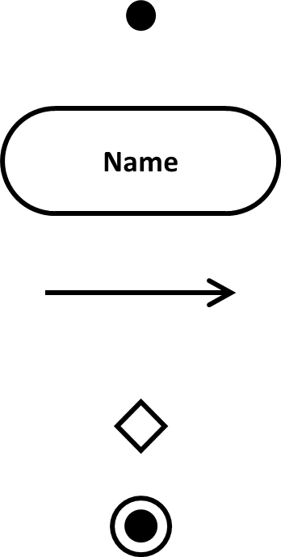
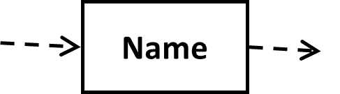

Activity and simulation
- It Shows relevant entities and data about each entity (attributes)
- their relationships (and cardinality)
- A variation of a state diagram
- States represent the performance of actions or subactivities
- Transitions are completion of one activity and the start of another
- Transitions are timeless
- Can take no time or forever
- Shows sequence of activities
- Can show work-flows between activities
- Can show responsibilities
- Sequencing of Business Use Cases
- Business Work Flows & Responsibilities
- Sequencing of IS Use Cases
- Sequencing of dialogue elements or screens within a Use Case
- Internal Data or Object Flows within the IS
- Start point
- Exactly one: A filled dot
- Activity
- With name: A rectangle with semicircular sides.
- Transition (or flow)
- Usually no label: An arrow directed towards the next activity.
- Decision point
- End point
- A filled circle inside a blank circle
- 
- Advanced notations (UML)
- Work, Object or Data Flow
- Replaces a transition
- Names object passed
- 
- Responsibilities
- Name the lane containing the relevant activities
- Parallel Activity
- animating activities and time
- useful technique for studying business processes and business process change.
- Simulation models can also show whether a business process works correctly or whether, under some circumstances, it will fail to complete.